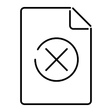

Produtor: {{ wine.producer ? wine.producer : '--' }}
País: {{ wine.country ? wine.country : '--' }}
Descrição: {{ wine.description ? wine.description : '--' }}
Média de avaliações:


Tipo de vinho: {{ wine.type ? wine.type : '--' }}
Tipo de uva: {{ wine.type_grape ? wine.type_grape : '--' }}
Harmonização: {{ wine.harmonizing ? wine.harmonizing : '--' }}